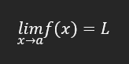
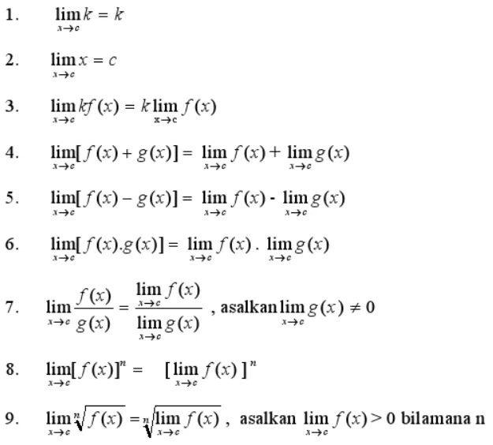

Limit adalah konsep penting dalam kalkulus yang
menggambarkan bagaimana suatu fungsi berperilaku saat variabel
mendekati nilai tertentu. Konsep limit membantu kita memahami nilai
fungsi di sekitar titik tertentu, termasuk titik-titik di mana fungsi
mungkin tidak terdefinisi.
Limit dari f(X) saat x mendekati a ditulis sebagai berikut :

Ini berarti bahwa saat x mendekati a, nilai dari f(x) mendekati L,
meskipun f(x) mungkin tidak terdefinisi tepat di titik x = a.
